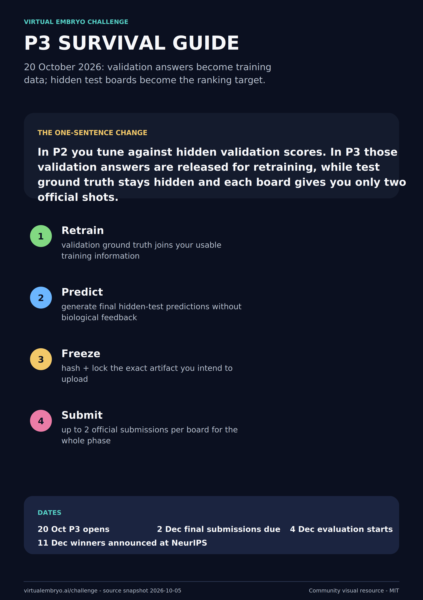
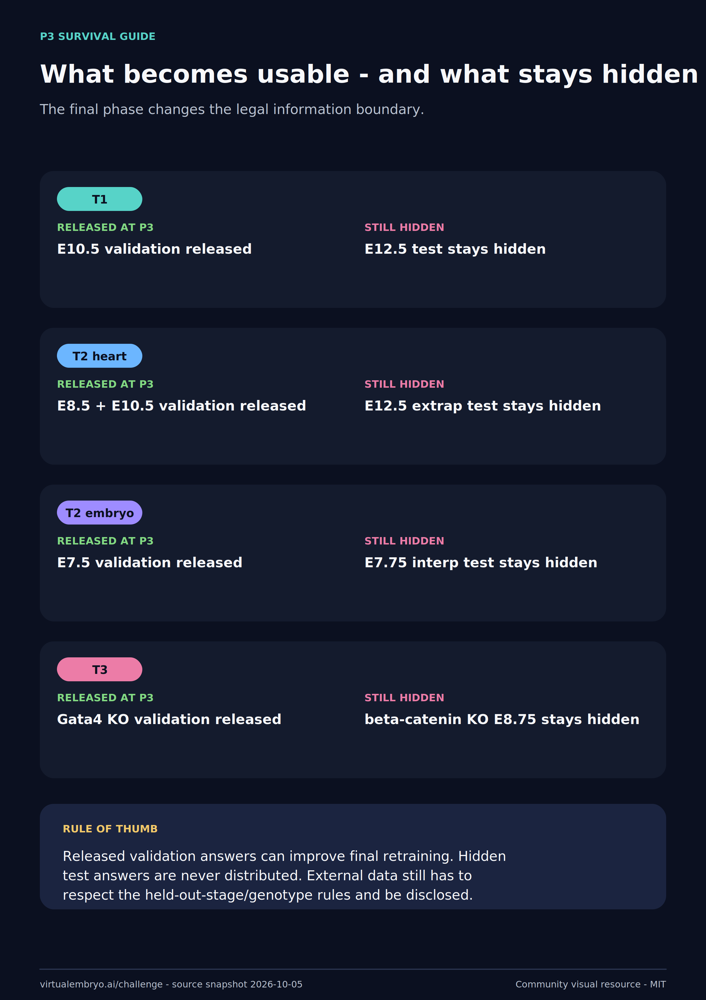
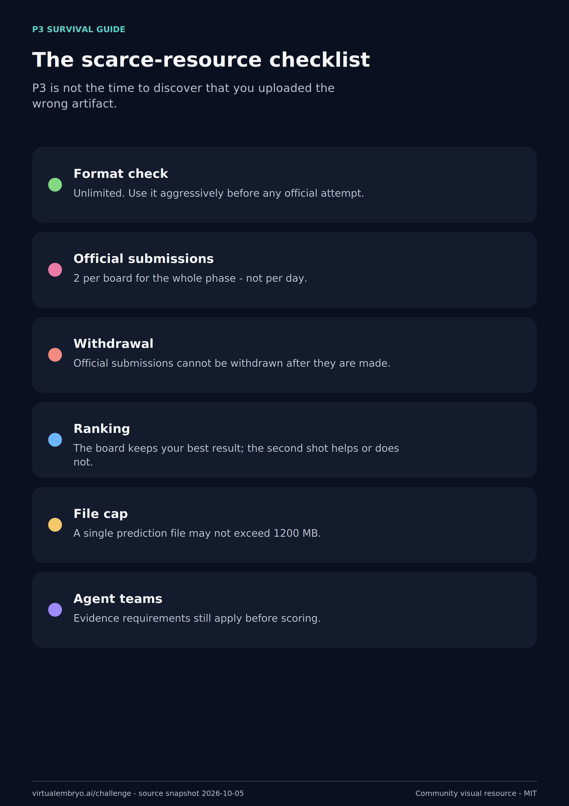
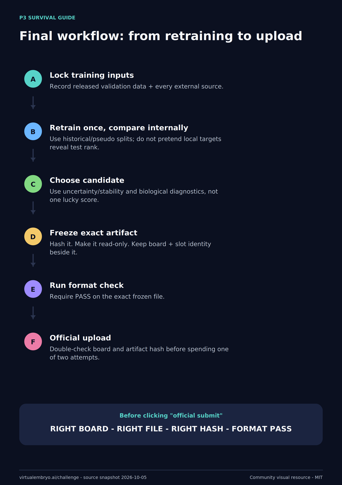

01 transition
Open any image for a full-resolution PNG. Editable SVG and individual PDF source assets are in the repository. Scientific/rules claims are tied to a dated official-source snapshot.

01 transition

02 information boundary

03 submission rules

04 final workflow